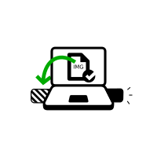
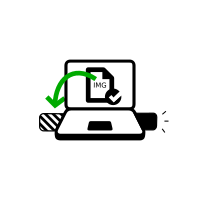

Start GNOME Disks (also called Disks).
For example, you can press the Super key, then type disk, then choose Disks.Choose .
Plug in the intermediary USB stick on which you want to install Tails.
All the data on this USB stick will be lost.
The Persistent Storage of your Tails USB stick will not be copied to the temporary Tails.
A new drive appears in the left pane. Click on it.

 


Click on the
 button in
the titlebar and choose
.
button in
the titlebar and choose
.
In the Restore Disk Image dialog, click on the file selector button.
Choose the USB image that you downloaded earlier.
Make sure that the USB image has an .img file extension.
If the image has an .iso file extension, it is not the correct image. Please go back to the download step for installing from Linux. download step for upgrading from Tails. download step for upgrading from Linux.
Click on the Start Restoring… button.
In the confirmation dialog click Restore.
Depending on your Linux distribution, you might be asked for your administration password.
The installation takes a few minutes.
After the installation is finished, click on the
 button.
button.
install with gnome disks.inline